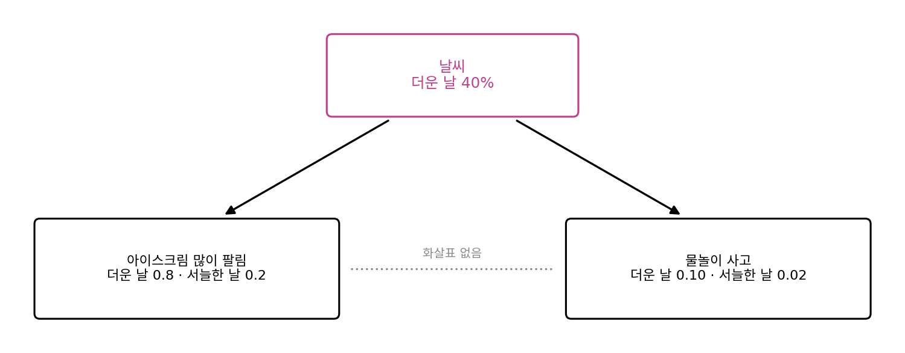
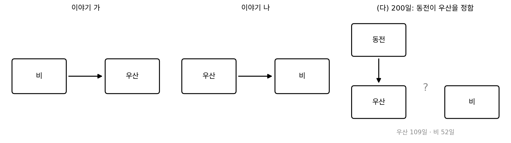
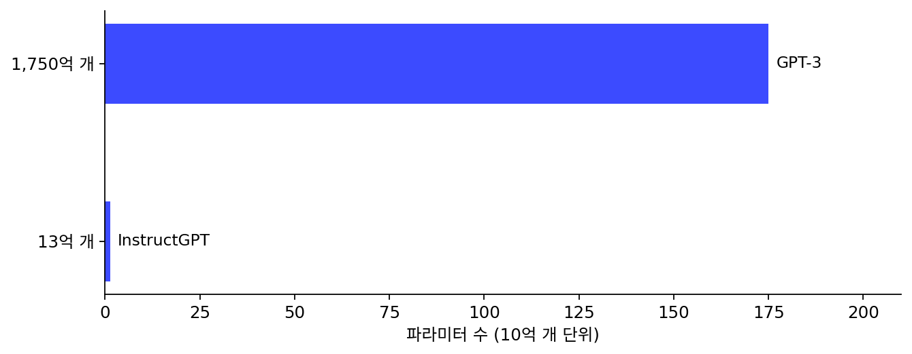

개입: 관측을 아무리 줄여도 남는 물음
창밖을 보면 우산을 쓴 사람이 많은 날에 비가 온다. 우산 쓴 사람 수를 세는 기록과 비가 온 기록을 함께 모으면, 둘은 아주 잘 맞물려 있어서 한쪽으로 다른 쪽을 잘 예측할 수 있다. 이 기록을 가장 짧게 적는 모델도 찾을 수 있다. 그런데 「모든 사람에게 우산을 펴게 하면 비가 올까?」라는 물음에 그 모델이 답할 수 있을까? 지금까지 이 책이 줄인 것은 모두 세상에 손대지 않고 바라본 자료였다.
역사: 인과의 사다리
컴퓨터 과학자 펄(Judea Pearl)은 과학 저술가 매켄지(Dana Mackenzie)와 함께 쓴 『The Book of Why』(2018)에서 자료로 하는 추론을 세 칸짜리 사다리로 나누었다. 첫 칸은 연관(무엇이 무엇과 함께 나타나나)으로, 상관과 회귀, 그리고 관측 자료에서 다음을 예측하는 일이 여기 있다. 둘째 칸은 개입(내가 무엇을 바꾸면 어떻게 되나), 셋째 칸은 반사실(그때 다르게 했다면 어떻게 되었을까)이다. 펄은 첫 칸의 자료를 아무리 많이 모아도 그것만으로는 둘째 칸의 물음에 답할 수 없고, 무엇이 무엇의 원인인지에 대한 가정이 함께 있어야 한다고 보았다. 셋째 칸을 따로 둘 필요가 있느냐를 두고는 비판도 있다.
우산과 비, 두 이야기
이 생각을 가장 작은 예로 확인해 보자. 날마다 「비가 왔나」와 「우산을 폈나」 두 가지만 적으면, 변수가 둘뿐이라 가능한 인과 이야기를 모두 손으로 적을 수 있다.
flowchart LR R1["이야기 가: 비<br/>p(비) = 0.3"] --> U1["우산<br/>p(우산 | 비) = 0.9<br/>p(우산 | 비 아님) = 0.1"] U2["이야기 나: 우산<br/>p(우산) = 0.34"] --> R2["비<br/>p(비 | 우산) = 0.794<br/>p(비 | 우산 없음) = 0.0455"]
이야기 가는 비가 올 확률이 0.3 이고, 비가 오면 0.9, 안 오면 0.1 의 확률로 우산을 편다고 한다. 이야기 나는 거꾸로 우산을 펼 확률이 0.34 이고, 우산을 폈으면 0.794, 안 폈으면 0.0455 의 확률로 비가 온다고 한다. 이야기 나의 숫자는 이야기 가와 같은 결합 분포가 나오게 계산한 것이다. 둘 다 「비 오고 우산」 0.27, 「비 오고 우산 없음」 0.03, 「비 안 오고 우산」 0.07, 「둘 다 아님」 0.63 을 준다.
씨앗을 고정해 이야기 가에서 1,000일을 뽑았다(비 307일, 우산 340일, 둘 다 273일). 이 기록을 두 이야기로 각각 적으면 이야기 가로 1,362.01비트, 이야기 나로 1,362.01비트, 차이가 0이다. 하루 평균 1.362비트로, 결합 분포의 엔트로피 1.3503비트에 가깝다. 두 이야기는 관측 기록을 똑같이 짧게 적고, 어떤 압축기도 둘을 가를 수 없다(계산은 sources/limits/s5_causal.py).
두 이야기가 갈리는 곳은 누군가 우산을 억지로 펴게 했을 때다. 이야기 가에서 우산은 비의 결과일 뿐이라, 우산을 펴게 해도 비 올 확률은 0.30 그대로다. 이야기 나에서는 우산이 비의 원인이라 비 올 확률이 0.794 로 뛴다. 이렇게 어떤 변수의 값을 자연스럽게 일어나게 두지 않고 밖에서 정해 놓은 뒤 무슨 일이 생기는지 보는 것을 개입 (변수를 밖에서 정해 놓고 결과를 보는 일, intervention)이라 한다. 관측 기록이 정해 주는 것은 결합 분포까지이고, 개입의 결과는 결합 분포만으로 정해지지 않는다.
ML에서: 목표와 행동, 그리고 흐릿한 JPEG
다음 토큰 예측으로 학습한 언어 모델은 인터넷 글이라는 거대한 관측 기록을 짧게 적는 법을 배운 것이다. 그 기록 안에는 사람들이 실험하고 개입한 이야기도 글로 들어 있어서, 모델은 그런 글을 흉내 낼 수 있다. 하지만 모델 자신이 무엇을 바꿔 보고 결과를 받아 보는 일도, 무엇을 해야 하는지와 어떤 답이 좋은 답인지도 학습 목표에 없다. 그 기준은 사람의 판단을 보상으로 바꿔 모델을 다듬는 RLHF(사람의 피드백으로 하는 강화학습)가 들여온다. 『생성모델의 강화학습』이 소개하는 InstructGPT 의 결과가 압축 목표와 좋은 답 사이의 거리를 보여 준다. 사람들은 파라미터 13억 개짜리 InstructGPT 의 답을 100배 넘게 큰 1,750억 개짜리 GPT-3 의 답보다 더 좋아했다.
소설가 창(Ted Chiang)은 2023년 2월 9일 『뉴요커』에 실은 글 「ChatGPT 는 웹의 흐릿한 JPEG 이다(ChatGPT Is a Blurry JPEG of the Web)」에서 큰 언어 모델을 웹의 글을 손실 압축한 것에 비유했다. JPEG 그림이 사라진 칸을 그럴듯하게 메우듯, 모델은 원문을 그대로 꺼내 주지 못하고 그럴듯하게 메운 글을 내놓는다는 것이다. 이 책의 말로 보면 이 비유는 반만 맞다. 산술 코딩과 함께 쓰면 언어 모델은 한 글자도 틀리지 않게 되살리는 무손실 압축기가 된다. 다만 그때도 되살리는 데 필요한 정보의 대부분은 코드 쪽에 있고, 모델 자신이 가진 것은 「무엇이 그럴듯한가」라는 예측뿐이다. 모델만 가지고 무엇을 꺼내려 하면 흐릿한 JPEG 에 가까워진다.
문제 12. 아이스크림을 팔지 못하게 하면
어느 바닷가 마을에서 더운 날은 40% 이고, 더운 날에는 아이스크림이 많이 팔릴 확률이 0.8, 서늘한 날에는 0.2 다. 물놀이 사고는 더운 날 0.10, 서늘한 날 0.02 의 확률로 일어나고, 아이스크림 판매와는 상관없이 날씨에만 달렸다. (가) 아이스크림이 많이 팔린 날과 적게 팔린 날의 사고 확률은? (나) 군청이 사고를 줄이려고 아이스크림 판매를 금지하면 사고 확률은?


많이 팔린 날의 비율은 0.4 × 0.8 + 0.6 × 0.2 = 0.44 예요. 많이 팔린 날 사고 확률은 (0.4 × 0.8 × 0.10 + 0.6 × 0.2 × 0.02) ÷ 0.44 = 0.0782, 적게 팔린 날은 0.0314. 2.49배네요. 금지하면 사고가 꽤 줄겠는데요.

금지하면 바뀌는 게 뭐죠? 날씨가 바뀌나요?

아… 사고는 날씨에만 달렸다고 했으니까, 아이스크림을 막아도 더운 날은 그대로 40% 예요. 사고 확률은 0.4 × 0.10 + 0.6 × 0.02 = 0.052, 금지 전이랑 똑같아요.

관측 자료에서 아이스크림이 사고를 2.49배 「예측」하는 건 맞아. 더운 날이라는 숨은 원인이 둘 다 부르니까. 그런데 예측을 잘한다고 바꿨을 때 결과를 아는 건 아니야.

수학 시간에 「p 이면 q」가 참이어도 q 를 억지로 참으로 만든다고 p 가 되는 건 아니라고 배운 것과 비슷해.
문제 13. 동전으로 우산을 정한 날
우산과 비의 두 이야기(가: 비 → 우산, 나: 우산 → 비)를 쓴다. (가) 두 이야기가 관측 기록에 같은 확률을 준다는 것을 결합 분포의 곱셈 규칙으로 보여라. (나) 실제 세계가 이야기 가라면, 관측 기록을 더 모아서 두 이야기를 가를 수 있는가? (다) 200일 동안 날마다 동전을 던져 우산을 펼지 정했다(우산 109일, 비 52일). 우산은 동전이 정했으니 우산을 적는 비트는 두 이야기 모두 하루 1비트로 같고, 비를 적는 비트만 다르다. 이야기 가는 비를 p(비) = 0.3 으로, 이야기 나는 p(비 | 우산) 으로 적는다. 비를 적는 비트는 이야기 가 166.5비트, 이야기 나 286.5비트였다. 무엇을 말해 주는가?

(가)는 p(비)p(우산 | 비) 랑 p(우산)p(비 | 우산) 이 둘 다 p(비, 우산) 이니까 같아요. (나)는 1,000일을 만 일로 늘리면 차이가 나지 않을까요?
하루하루의 확률이 두 이야기에서 똑같다면, 날이 늘면 차이는 어떻게 되죠?

날마다 차이가 0이면 만 일을 더해도 0이네요. 관측만으로는 영원히 못 가르는구나.
(다)는 120비트 차이가 났어. 동전이 우산을 정했으니 우산과 비 사이에 남은 관계는 「우산이 비를 부르는가」뿐이야. 이야기 나는 우산 편 날 비가 0.794 로 온다고 믿었다가 계속 틀려서 비싸게 적은 거고.

그러니까 압축이 쓸모없는 게 아니라, 압축할 자료에 개입한 기록이 들어 있어야 원인을 가를 수 있는 거네요. 자료를 어떻게 모았느냐가 먼저예요.

그래요. 같은 압축의 잣대가 관측 기록 앞에서는 두 이야기를 가르지 못하고, 개입한 기록 앞에서는 120비트 차이로 갈라요. 의학에서 약의 효과를 볼 때 누가 약을 먹을지를 동전 같은 무작위로 정하는 것도 이 때문이에요.

팀 과제에서 누가 잘했는지 알려면 역할을 제비뽑기로 바꿔 봐야 한다는 거네요. 원래 맡은 사람끼리만 보면 사람이 잘한 건지 역할이 쉬운 건지 모르니까요.
문제 14. 13억 개는 왜 1,750억 개를 이겼을까?
InstructGPT 실험에서 사람들은 파라미터 13억 개인 InstructGPT 의 답을 1,750억 개인 GPT-3 의 답보다 더 좋아했다. (가) 두 모델의 크기는 몇 배 차이인가? (나) 인터넷 글을 예측하는 둘째 뜻의 압축으로 재면 어느 쪽이 나을 것으로 보이는가? (다) 그런데도 13억 개가 왜 이겼는지 이 장의 말로 설명하라.

(가)는 1,750억 ÷ 13억 = 135배요. (나)는 당연히 1,750억 개죠. 스케일링 법칙대로면 파라미터가 많을수록 손실이 낮으니까요. 그럼 사람들이 이상하게 고른 거 아니에요?
사람들에게 물은 건 무엇이었죠? 「어느 답이 인터넷 글처럼 그럴듯한가」였나요?

아니요, 어느 답이 더 좋은가요. 질문에 맞게 답했는지, 도움이 되는지. 인터넷 글을 잘 예측하는 것과는 다른 걸 물었네요.
인터넷 글을 잘 예측하는 모델은 질문 뒤에 올 법한 글을 이어 쓰니까, 질문을 되풀이하거나 엉뚱한 글을 이어 쓸 수도 있어. 「좋은 답」이라는 목표는 관측된 글의 분포 안에 적혀 있지 않고, 사람의 선호라는 바깥의 잣대에서 와.

그러면 황 외가 다듬은 모델을 뺀 것도 같은 얘기네요. 다듬으면 좋은 답은 늘어도, 인터넷 글 전체를 압축하는 능력과는 방향이 달라질 수 있으니까요.
그래요. 압축은 「세상이 어떻게 생겼나」를 배우는 데 강한 잣대지만, 「무엇을 해야 하나」는 압축의 목표 밖에 있어요. 우산 문제에서 개입이 관측 밖에 있었던 것처럼요.
교과서를 다 외운 선배보다 교수님이 원하는 답안 형식을 아는 후배가 학점을 더 잘 받는 거랑 비슷하네요. 아는 것과 원하는 걸 하는 건 다른 일이에요.